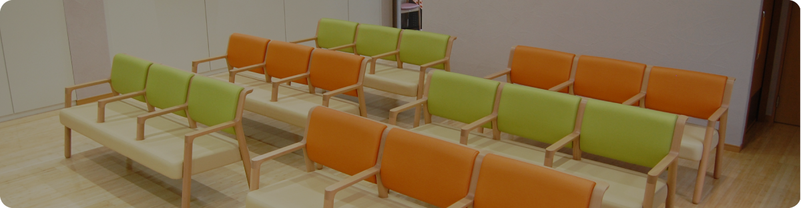
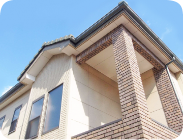
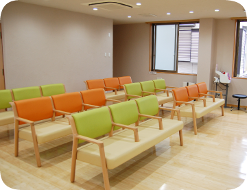
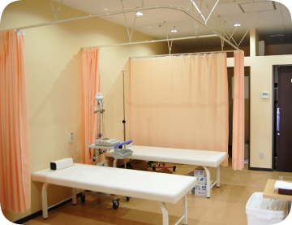
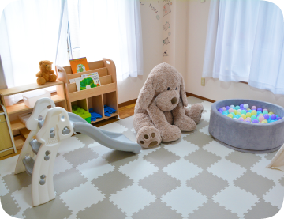

診療時間
診療時間

当院について
こばやし小児科の特徴
ABOUT
- 01かかりつけ医としてお子様の成長を見守ります
- 0歳時のワクチンからお子様の急な発熱、けがや病気、育児相談まで対応しています。
ただ治療するだけではなく、お子様の健やかな成長を保護者の皆様と共に見守っていきたいと思っています。
- 02小児科の専門医が診療します
- お子様の症状に合わせ、専門の医師が診療します。
また、必要があれば専門機関へ紹介させて頂くこともあります。
専門の医師がいる、地域の頼れる小児科としてご利用いただけたらうれしいです。
- 03保護者の皆様に安心して頂けるように
- お子様はいつ具合が悪くなるか分かりませんので、土曜日の夕方も診療しています。
また、保護者様の診療も行っていますので遠慮なくお声がけください。
院内紹介
INTRODUCTION
- 
こばやし小児科 正面 - 
待合室 - 
処置室 - 
キッズスペース